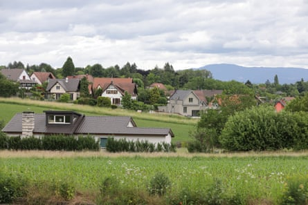
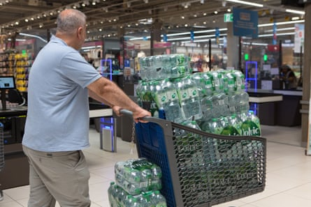
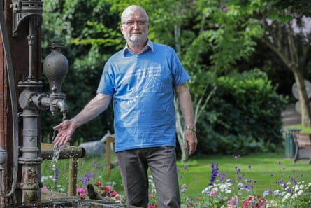
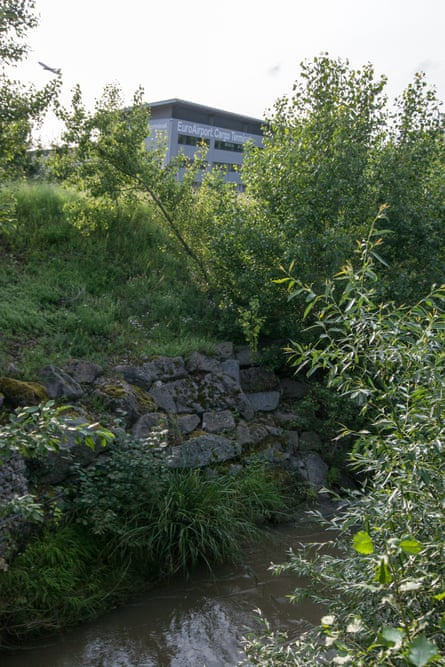
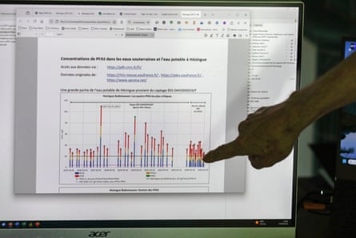
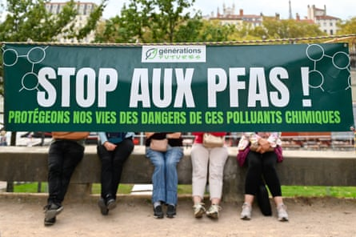

O ne quiet Saturday night, Sandra Wiedemann was curled up on the sofa when a story broke on TV news: the water coming from her tap could be poisoning her. The 36-year-old, who is breastfeeding her six-month-old son Côme, lives in the quiet French commune of Buschwiller in Saint-Louis, near the Swiss city of Basel. Perched on a hill not far from the Swiss and German borders, it feels like a safe place to raise a child – spacious houses are surrounded by manicured gardens, framed by the wild Jura mountains.
But as she watched the news, this safety felt threatened: Wiedemann and her family use tap water every day, for drinking, brushing her teeth, showering, cooking and washing vegetables. Now, she learned that chemicals she had never heard of were lurking in her body, on her skin, potentially harming her son. “I find it scary,” she says. “Even if we stop drinking it we will be exposed to it and we can’t really do anything.”
The next morning she rushed to the supermarket expecting frantic Covid-style hoarding, but the aisles were calm – most people hadn’t seen the news. Three days later, a letter dropped through her door from the local authority. Drinking water was prohibited, it said, for children under two years old, pregnant or breastfeeding women and people with weak immune systems. The same letter was pushed through the letterbox of about 60,000 other people across 11 communes. The supermarket rush began.
Rural Saint-Louis is close to the borders of Switzerland and Germany, and is the site of France’s biggest ever ban on drinking tap water.Photograph: Stefan Pangritz
Saint-Louis is now the site of France’s biggest ever ban on drinking tap water. Its at-risk residents will rely on bottled water until at least the end of the year, when authorities hope water filter systems will be installed. Tests of the local tap water showed levels of Pfas – “forever chemicals” linked to cancer, immune dysfunction and reproductive issues – had reached four times the recommended limit. Shelves were stripped bare as families scrambled to stockpile bottles of water to protect loved ones.
The source was a firefighting foam used at the airport since the 1960s, ending only in 2017, according to the joint statement from the local authority and regional health agency. Toxic residues from the foam lingered, filtering through the soil into drinking water and people’s bodies – probably over decades.
Firefighting foam used for decades at the busy Basel Mulhouse Freiburg airport is the source of the pollution.Photograph: Stefan Pangritz
But the situation in Saint-Louis may be only the beginning of drinking water bans across Europe. In January, the EU will start enforcing new limits on Pfa levels. With more than 2,300 sites in Europe exceeding the new safe limits, experts say the ban in France is merely a precursor of more to come.
“I think that we are at the start of the story,” says Séverine Maistre, who lives in Saint-Louis and who used to work in clinical drug trials. She believes that if you look for Pfas, you find them. “Currently we are talking about peaks here and there … [But the chemicals] will be everywhere in France . It will be the same in Germany, in Switzerland, in the UK, and everywhere.”
O ne month after the letters arrived in Saint-Louis, the panic hasn’t eased. At the supermarket, a man checks out a trolley full of bottles of water and €68 (£58) flashes up on the till. Dozens of other people carry bottled water out with their shopping.
“Even if we are not fragile we are scared,” says a 70-year-old woman who did not want to be named. “We are terrorised – this is about water, without which we cannot live.”
People stocked up on bottled water after the Pfas news spread.Photograph: Stefan Pangritz
Clement Luake, a veteran employee at the Leclerc supermarket in Saint-Louis, says he has never seen anything like it in his 30 years in the job. “It was massive,” he says. Normally he loads 63 pallets of water on to shelves each week, but now it’s in excess of 120. “There are four trucks coming every week,” says Luake, as a colleague helps him heave large bottles on to shelves.
Local authorities estimate nearly 3,000 people in the Haut-Rhin region fall into “vulnerable” categories. Each will receive a single €80 payment to help cover the cost of bottled water. But for people such as Wiedemann, the threat goes far beyond compensation. “It doesn’t just concern sensitive people – Pfas don’t choose who they attack,” she says. Wiedemann moved to the area in 2020, and has since had two miscarriages and was diagnosed with endometriosis, after experiencing increasingly painful periods.
“The health problems started when I arrived here. I am wondering if there is a link, but I could never prove that,” she says. Others share similar concerns. Many have been drinking contaminated water for decades, unaware.
P fas – short for per- and polyfluoroalkyl substances – refer to thousands of chemicals valued for their non-stick, indestructible properties. They’re used in everything from cooking pans to waterproof jackets, food packaging, firefighting foams and electronics. They don’t break down naturally and can persist in the environment for centuries. Today, they are found in the blood of nearly every person on Earth.
There is no official testing of residents’ blood under way to understand the potential health impacts. Bruno Wollenschneider, head of Adra (Association de Défense des Riverains de l’Aéroport de Bâle Mulhouse) – a 200-member residents’ association – organised his own testing and sent 10 blood samples from Adra members to a lab.
Bruno Wollenschneider, who sent blood samples from 10 residents’ association members in Saint-Louis to a lab for analysis.Photograph: Stefan Pangritz
The person with the highest had 22 micrograms per litre (µg/l) of blood. The average was 14.9µg/l, which would make people in Saint-Louis among the most contaminated 5 to 10% in France, according to public health data from 2019. Long-term adverse health effects are possible for people with levels above 6.9µg/l of blood , according to the European Food Safety Authority. “The state is there to protect us,” says Wollenschneider. “If people had been warned by the authorities, we could have protected ourselves, instead of continuing to drink water.”
To remedy the problem, the local authority plans to install new water treatment plants at a cost of €20m , and a further €600,000 a year to run. From 2026, water bills will probably rise to help pay for it.
As well as posing risks to human health, Pfas in a water supply threaten entire ecosystems . This is because chemicals build up in the tissues of aquatic organisms in a similar way to humans.
American alligators are suffering from unhealed and infected lesions in North Carolina in the US, linked to Pfas exposure.Photograph: Daniel Dempster Photography/Alamy
In North Carolina, alligators are suffering from unhealed and infected lesions , fewer sea turtle hatchlings are emerging in the north Pacific, and in Wisconsin, tree swallows are failing to produce young. Even in remote areas, such as the Arctic, hooded seals and their pups are suffering from thyroid issues . All these animals had experienced high levels of exposure to Pfas , researchers found.
More than 600 species on every continent are at risk of harm, according to a map illustrating how damaging chemicals are appearing in ecosystems everywhere. Impacts cascade down an ecosystem – sensitive species could decline, while those that are tolerant do better, which can change the way ecosystems function.
A t the centre of the crisis is the Basel Mulhouse Freiburg airport – 2km away from the supermarket – which is an international hub serving passengers from France, Germany and Switzerland. The sound of aircraft taking off can be heard more than a hundred times a day.
Below the airport’s new terminal is the groundwater the chemicals have been leaching into.Photograph: Stefan Pangritz
The new terminal covers the ground where firefighting foams containing Pfas were used for decades because they are effective at tackling kerosene fires. Up to 15 metres below that is the groundwater these chemicals have been leaching into. Wollenschneider has lived within five minutes of the airport his whole life. As head of Adra – which was created in 1988 to fight airport expansion – he now finds himself fighting on a more personal front: for clean drinking water.
“In France, we had faith in water – but that’s broken,” says Wollenschneider. “Authorities lied to us, they tricked us,” he says, referring to the fact that authorities didn’t tell people about Pfas contamination for years after it was first identified in government data. He is spearheading the struggle for information, and fighting for the airport to foot the bill for the €20m clean-up cost.
“The airport is responsible. Water is a public good. The last thing is the law to force the authorities to act and make the airport pay – we don’t have the choice,” he says. He believes this case could set a legal precedent. “It is the first time in France where a commercial airport is known to be the cause of pollution. There are likely others,” says Wollenschneider.
Currently, there are no legally enforceable limits for Pfas in drinking water across Europe. But that changes in January 2026 , when the EU will impose a threshold of 0.1 micrograms per litre. The restrictions in Saint-Louis have been introduced in anticipation of this limit. The turmoil in this corner of France is a preview of what could happen elsewhere, and also raises the question of who will foot the bill for a potentially very expensive clean-up.
Across Europe more than 23,000 sites are contaminated with Pfas – either in water, soil or living organisms, according to the Forever Pollution Map , which is maintained by the French National Centre for Scientific Research (CNRS). Of those, 2,300 sites are higher than the forthcoming EU regulations allow and considered hazardous.
A readout of the water analysis of Hésingue, a village near the Basel Mulhouse Freiburg airport, showing the concentrations of Pfas.Photograph: Stefan Pangritz
The contaminated sites are littered across Europe. There are 34 communes in France where Pfas in drinking water exceed the new EU limit. In the Lyon region alone, 160,000 people in 50 towns have been drinking water above the new EU limits. In Veneto, Italy, up to 350,000 people were exposed to Pfas from a chemical plant that operated from 1964 to 2018. In Antwerp, Belgium, about half of the people living within 5km of a plant operated by the multinational 3M have elevated Pfas levels in their blood.
In Saint-Louis, records suggest the government agency for groundwater first found records of high levels of Pfas in the water in 2017, according to data from the CNRS. Several government agencies had access to this data, but it appears the information wasn’t acted upon.
Thierry Litzler, vice-president of Saint-Louis urban area, who is in charge of water for the district, said he heard about high levels of Pfas in the water in October 2023 . “Things went quickly from the moment we had the information,” he says.
In response to why information from 2017 was not passed on to his office, he says: “ To know why a state service did do – or did not do – more than eight years ago, for me, it’s not the subject of the moment … I do not have the right to judge it today.”
A banner protesting over Pfas during a demonstration against a factory extension in Lyon, France, in September 2024.Photograph: Matthieu Delaty/Hans Lucas/AFP/Getty Images
Now, he believes the government will act faster because there is a roadmap in place. “We were the first. We were the pioneers – at the time, our agency had to wait, we didn’t have instruction to act,” says Litzler.
There is no criminal or civil case against the airport, because the foams they used were certified at the time. Manuela Witzig, head of communications and public affairs at the airport, says they are “cooperating with the authorities in charge of investigating the case”. Investigations and remediation work are under way to work out where contaminated areas are. She adds that the airport “intends to contribute financially to resolving the situation” but did not give details.
What is unfolding in Saint-Louis is just the beginning of a Europe-wide battle over water contamination once EU regulations are in place. Calls are growing to phase out Pfas entirely . In the meantime, people across France are mobilising to demand authorities release information about Pfas, prioritise their health, and make polluters pay. “We are not isolated,” says Wollenschneider.
Find more age of extinction coverage here , and follow the biodiversity reporters Phoebe Weston and Patrick Greenfield in the Guardian app for more nature coverage